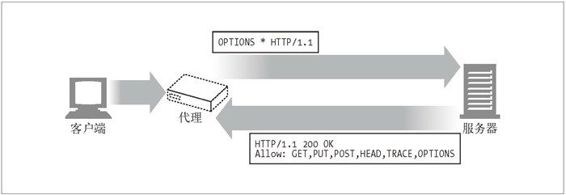

6.8 代理的互操作性
客户端、服务器和代理是由不同厂商构建的，实现的是不同版本的 HTTP 规范。它们支持的特性各不相同，也存在着不同的问题。代理服务器位于客户端和服务器设备之间，这些设备实现的协议可能有所不同，可能存在着很棘手的问题。
6.8.1 处理代理不支持的首部和方法
代理服务器可能无法理解所有经其传输的首部字段。有些首部可能比代理自身还要新；其他首部可能是特定应用程序独有的定制首部。代理必须对不认识的首部字段进行转发，而且必须维持同名首部字段的相对顺序。1 类似地，如果代理不熟悉某个方法，那么只要可能，就应该尝试着将报文转发到下一跳节点上去。
1 报文中可能会出现多个报文首部字段具有相同字段名的情况，如果存在这种情况的话，就要将其等价地合并为一个由逗号分隔的列表。因此，要对合并后的字段值进行解释，具有相同字段名的首部字段的接收顺序就变得非常重要了，因此，代理在转发报文时，就不能修改这些同名字段值的相对顺序。
在当今的大部分网络中，如果代理不能转发它不支持的方法，可能就无法生存下去了，因为通过微软的 Outlook 进行 Hotmail 访问就大量地使用了 HTTP 扩展方法。
6.8.2 OPTIONS：发现对可选特性的支持
通过 HTTP OPTIONS 方法，客户端（或代理）可以发现 Web 服务器或者其上某个特定资源所支持的功能（比如，它们所支持的方法）（参见图 6-26）。通过使用 OPTIONS，客户端可以在与服务器进行交互之前，确定服务器的能力，这样它就可以更方便地与具备不同特性的代理和服务器进行互操作了。

图 6-26 用 OPTIONS 来判定服务器支持的方法
如果 OPTIONS 请求的 URI 是个星号（*），请求的就是整个服务器所支持的功能。比如：
OPTIONS * HTTP/1.1
如果 URI 是个实际资源地址，OPTIONS 请求就是在查询那个特定资源的可用特性：
OPTIONS http://www.joes-hardware.com/index.html HTTP/1.1
如果成功，OPTIONS 方法就会返回一个包含了各种首部字段的 200 OK 响应，这些 字段描述了服务器所支持的，或资源可用的各种可选特性。HTTP/1.1 在响应中唯一指定的首部字段是 Allow 首部，这个首部用于描述服务器所支持的各种方法（或者服务器上的特定资源）。2 OPTIONS 允许在可选的响应主体中包含更多的信息，但并没有对这种用法进行定义。
2 并不是所有资源都支持每种方法的。比如，CGI 脚本查询可能就不支持文件 PUT，而静态的 HTML 文件则不接受 POST 方法。
6.8.3 Allow 首部
Allow 实体首部字段列出了请求 URI 标识的资源所支持的方法列表，如果请求 URI 为 * 的话，列出的就是整个服务器所支持的方法列表。例如：
Allow: GET, HEAD, PUT
可以将 Allow 首部作为请求首部，建议在新的资源上支持某些方法。并不要求服务器支持这些方法，但应该在相应的响应中包含一个 Allow 首部，列出它实际支持的方法。
因为客户端可能已经通过其他途径与原始服务器进行了交流，所以即使代理无法理解指定的所有方法，也不能对 Allow 首部字段进行修改。